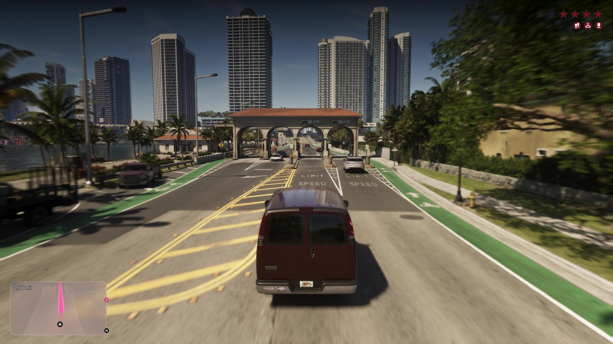

Мост-дамба Вайс-Сити и Venetian Causeway
Опубликовано:
Длинный мост через залив с белыми резными перилами, старинными фонарями и зелёными велодорожками почти один в один повторяет Venetian Causeway. Название моста в игре пока не объявлено.


- В «Расширенном показе» Джейсон на красном кабриолете едет по длинному мосту через залив в сторону высоток.
- Реальный Venetian Causeway соединяет Майами и Майами-Бич через залив Бискейн, длина — около 4,5 км.
- Дамба идёт через цепочку искусственных Венецианских островов, на ней два разводных моста.
- С 1989 года мост внесён в Национальный реестр исторических мест США.
Что в игре
Кадр из «Расширенного показа»: Джейсон ведёт красный кабриолет по мосту-дамбе. По бокам — белые бетонные перила с узором, высокие фонари в старинном стиле и зелёные велодорожки, впереди — высотки на берегу. В другом эпизоде, с высоты, видна вся дамба: она идёт через низкие острова с виллами, а на въезде стоит арка с черепичной крышей.

Что в реальности
Venetian Causeway — мост-дамба длиной около 4,5 км через залив Бискейн. Он соединяет материковый Майами и Майами-Бич и проходит по цепочке искусственных Венецианских островов. Открыт в 1925 году на месте деревянного моста Коллинза (1913) — первого моста, по которому на Майами-Бич можно было проехать на машине. На дамбе два разводных моста, проезд платный, пункт оплаты стоит на острове Бискейн. С 13 июля 1989 года Venetian Causeway внесён в Национальный реестр исторических мест США.
Сегодня это любимый маршрут велосипедистов и бегунов: машин мало, вид на залив и центр Майами открытый.
Арка с черепичной крышей на въезде в игре похожа на пункт оплаты проезда: Venetian Causeway — одна из немногих платных дорог в черте Майами, деньги берут на острове Бискейн. Совпадение арки с реальным пунктом оплаты — наша трактовка, Rockstar кадр не комментировала.
Совпадает и отличается
| Venetian Causeway | GTA 6 | |
|---|---|---|
| Белые резные перила | Да | 🟢 Да |
| Старинные фонари вдоль моста | Да | 🟢 Да |
| Велодорожки | Велополосы | 🟢 Зелёные велодорожки |
| Острова с виллами по пути | Венецианские острова | 🟢 Да |
| Пункт оплаты на въезде | На острове Бискейн | 🟡 Арка с черепицей |
| Название | Реальное | Узнаем в игре |
Источники: Rockstar Games («Расширенный показ» GTA 6); National Register of Historic Places (Venetian Causeway, 1989); Miami-Dade County — Venetian Causeway.
Реальные фото: Фото: Daniel Di Palma, CC BY-SA 4.0 · Wikimedia Commons. Кадры игры: Rockstar Games.
Разборы кадров, слухи и факты за 30 секунд. Подписывайтесь:
YouTubeInstagramTikTok
 vs
vs
 vs
vs
 vs
vs